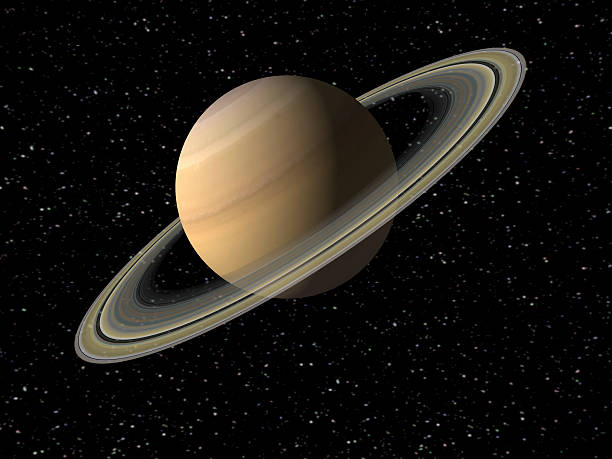

Our Sun is a 4.5 billion-year-old star – a hot glowing ball of hydrogen and helium at the center of our solar system. The Sun is about 93 million miles (150 million kilometers) from Earth, and without its energy, life as we know it could not exist here on our home planet. The Sun is the largest object in our solar system. The Sun’s volume would need 1.3 million Earths to fill it. Its gravity holds the solar system together, keeping everything from the biggest planets to the smallest bits of debris in orbit around it. The hottest part of the Sun is its core, where temperatures top 27 million degrees Fahrenheit (15 million degrees Celsius). The Sun’s activity, from its powerful eruptions to the steady stream of charged particles it sends out, influences the nature of space throughout the solar system.
Mercury is the smallest planet in our solar system. It’s just a little bigger than Earth’s moon. It is the closest planet to the sun, but it’s actually not the hottest. Venus is hotter. This small planet spins around slowly compared to Earth, so one day lasts a long time. Mercury takes 59 Earth days to make one full rotation. A year on Mercury goes by fast. Because it’s the closest planet to the sun, it doesn’t take very long to go all the way around. It completes one revolution around the sun in just 88 Earth days. If you lived on Mercury, you’d have a birthday every three months! A day on Mercury is not like a day here on Earth. For us, the sun rises and sets each and every day. Because Mercury has a slow spin and short year, it takes a long time for the sun to rise and set there. Mercury only has one sunrise every 180 Earth days! Isn't that weird?
Venus, Second major planet from the Sun. Named for the Roman goddess, Venus is, after the Moon, the most brilliant natural object in the night sky. Venus comes closer to Earth—about 26 million mi (42 million km)—than any other planet. Its orbit around the Sun is nearly circular at a distance of about 67 million mi (108 million km) and takes 225 days; its rotation, in retrograde motion, takes even longer (243 days). As viewed from Earth, Venus undergoes phase changes similar to the Moon’s, going through one cycle of phases in 584 days. It is seen only near sunrise or sunset and has long been known as both the morning star and the evening star. Venus is a near twin of Earth in size and mass but is completely enveloped by thick clouds of concentrated sulfuric acid droplets. Its surface gravity is about 90% that of Earth. Its atmosphere is over 96% carbon dioxide, with a pressure about 95 times Earth’s. The dense atmosphere and thick cloud layers trap incoming solar energy so efficiently that Venus has the highest surface temperature of any of the Sun’s planets, more than 860 °F (460 °C). Radar imaging indicates that the surface is dry and rocky, consisting mostly of gently rolling plains, broad depressions, and two large elevated regions analogous to continents on Earth; Venus also has impact craters, extensive lava fields, and massive shield volcanos. The interior is thought to be similar to that of Earth, with a metal core, a dense rocky mantle, and a less-dense rocky crust. Unlike Earth, Venus has no intrinsic magnetic field.
Our home planet is the third planet from the Sun, and the only place we know of so far that’s inhabited by living things.Earth has a diameter of roughly 8,000 miles (13,000 kilometers) and is mostly round because gravity generally pulls matter into a ball. But the spin of our home planet causes it to be squashed at its poles and swollen at the equator, making the true shape of the Earth an "oblate spheroid."
Our planet is unique for many reasons, but its available water and oxygen are two defining features. Water covers roughly 71% of Earth's surface, with most of that water located in our planet's oceans. About a fifth of Earth's atmosphere consists of oxygen, produced by plants. While Earth orbits the sun, the planet is simultaneously spinning around an imaginary line called an axis that runs through the core, from the North Pole to the South Pole. It takes Earth 23.934 hours to complete a rotation on its axis and 365.26 days to complete an orbit around the sun — our days and years on Earth are defined by these gyrations.
üìçEquatorial inclination to orbit: 23.4393 degrees. üìçLength of year (single revolution around the sun): 365.26 days. üìçLength of solar day (single rotation on its axis): 23.934 hours. üìçAverage distance from the sun: 92,956,050 miles (149,598,262 km) üìçPerihelion (closest approach to the sun): 91,402,640 miles (147,098,291 km). üìçAphelion (farthest distance from the sun): 94,509,460 miles (152,098,233 km).
Mars is the fourth planet from the Sun – a dusty, cold, desert world with a very thin atmosphere. Mars is also a dynamic planet with seasons, polar ice caps, canyons, extinct volcanoes, and evidence that it was even more active in the past.Mars is one of the most explored bodies in our solar system, and it's the only planet where we've sent rovers to roam the alien landscape.
NASA currently has two rovers (Curiosity and Perseverance), one lander (InSight), and one helicopter (Ingenuity) exploring the surface of Mars.
Perseverance rover – the largest, most advanced rover NASA has sent to another world – touched down on Mars on Feb. 18, 2021, after a 203-day journey traversing 293 million miles (472 million kilometers). The Ingenuity helicopter rode to Mars attached to the belly of Perseverance.
Perseverance is one of three spacecraft that arrived at Mars in 2021. The Hope orbiter from the United Arab Emirates arrived on Feb. 9, 2021. China’s Tianwen-1 mission arrived on Feb. 10, 2021, and includes an orbiter, a lander, and a rover. Europe and India also have spacecraft studying Mars from orbit.
In May 2021, China became the second nation to ever land successfully on Mars when its Zhurong Mars rover touched down.
An international fleet of eight orbiters is studying the Red Planet from above including three NASA orbiters: 2001 Mars Odyssey, Mars Reconnaissance Orbiter, and MAVEN.
These robotic explorers have found lots of evidence that Mars was much wetter and warmer, with a thicker atmosphere, billions of years ago.

Jupiter, Fifth planet from the Sun, the largest nonstellar object in the solar system. It has 318 times the mass and more than 1,400 times the volume of Earth. Its enormous mass gives it nearly 2.5 times the gravity of Earth (measured at the top of Jupiter’s atmosphere), and it exerts strong effects on other members of the solar system. It is responsible for the Kirkwood gaps in the asteroid belt and changes in the orbits of comets; it may act as a “sweeper,” pulling in bodies that might otherwise collide with other planets. Jupiter has more than 60 moons (see Galilean satellite) and a diffuse ring system discovered in 1979 by the Voyager spacecraft. The planet is a gas giant, composed mainly of hydrogen and helium in proportions near those of the Sun, which it orbits every 11.9 years at an average distance of 483 million mi (778 million km). Its rapid rotation (9 hr 55.5 min) acts on electric currents to give it the largest magnetic field of any of the planets and causes intense storms, including one that has lasted hundreds of years (the Great Red Spot). Little is known of its interior, but it is presumed to have a deep layer of metallic hydrogen and a dense core. Its central temperature is estimated to be 45,000 °F (25,000 °C); it radiates twice as much heat as it receives from the Sun, probably largely heat left over from its formation.

Saturn is the sixth planet from the Sun and is the second largest in the solar system with an equatorial diameter of 119,300 kilometers (74,130 miles). Much of what is known about the planet is due to the Voyager explorations in 1980-81. Saturn is visibly flattened at the poles, a result of the very fast rotation of the planet on its axis. Its day is 10 hours, 39 minutes long, and it takes 29.5 Earth years to revolve about the Sun. The atmosphere is primarily composed of hydrogen with small amounts of helium and methane. Saturn is the only planet less dense than water (about 30 percent less). In the unlikely event that a large enough ocean could be found, Saturn would float in it. Saturn's hazy yellow hue is marked by broad atmospheric banding similar to, but fainter than, that found on Jupiter.
The wind blows at high speeds on Saturn. Near the equator, it reaches velocities of 500 meters a second (1,100 miles an hour). The wind blows mostly in an easterly direction. The strongest winds are found near the equator and velocity falls off uniformly at higher latitudes. At latitudes greater than 35 degrees, winds alternate east and west as latitude increases.
Saturn's ring system makes the planet one of the most beautiful objects in the solar system. The rings are split into a number of different parts, which include the bright A and B rings and a fainter C ring. The ring system has various gaps. The most notable gap is the Cassini [kah-SEE-nee] Division, which separates the A and B rings. Giovanni Cassini discovered this division in 1675. The Encke [EN-kee] Division, which splits the A Ring, is named after Johann Encke, who discovered it in 1837. Space probes have shown that the main rings are really made up of a large number of narrow ringlets. The origin of the rings is obscure. It is thought that the rings may have been formed from larger moons that were shattered by impacts of comets and meteoroids. The ring composition is not known for certain, but the rings do show a significant amount of water. They may be composed of icebergs and/or snowballs from a few centimeters to a few meters in size. Much of the elaborate structure of some
of the rings is due to the gravitational effects of nearby satellites. This phenomenon is demonstrated by the relationship between the F-ring and two small moons that shepherd the ring material.

Uranus, Seventh planet from the Sun. It was discovered in 1781 by William Herschel (see Herschel family) and named for the Greek god personifying heaven. A blue-green gas giant, it has almost 15 times the mass of Earth and over 50 times its volume. It is less dense than Earth; the gravity at the top of its atmosphere is 11% weaker. Its equatorial diameter is 31,800 mi (51,100 km). Uranus has 10 sharply defined narrow, dark rings, with broad dust bands between them; the rings consist mainly of boulder-size chunks of dark material. Uranus also has at least 27 moons (most named after Shakespearean characters) and a magnetic field about as strong as Earth’s. The planet rotates once every 17 hours around an axis that, unusually, is almost parallel to the ecliptic; from Earth it appears to spin on its side. It takes 84 years to orbit the Sun, at a mean distance of 1.78 billion mi (2.87 billion km). It has no solid surface; its fluid interior is thought to consist of a mixture of rock, ices, and gas, with little or no rocky core. Its upper atmosphere is mostly hydrogen and helium; the blue-green colour comes from absorption of red light by the small amount of methane present.

Neptune, Eighth planet from the Sun, discovered in 1846 and named for the Roman god of the sea. It has an average distance from the Sun of 2.8 billion mi (4.5 billion km), taking nearly 164 years to complete one orbit and rotating every 16.11 hours. Neptune has more than 17 times Earth’s mass, 58 times its volume, and 12% stronger gravity at the top of its atmosphere. It has an equatorial diameter of 30,775 mi (49,528 km). Neptune consists largely of hydrogen and helium. It has no solid surface; its interior is believed to consist of a fluid mixture of rock, ices, and gas. Its atmosphere contains substantial amounts of methane gas, whose absorption of red light causes Neptune’s deep blue-green colour. The Voyager 2 space probe in 1989 discovered winds of over 1,570 mi/hour (700 m/second), the fastest known for any of the Sun’s planets, and dark spots that appear to be storms similar to Jupiter’s Great Red Spot. Neptune receives little solar radiation, but it radiates substantially more energy than it receives, which indicates an internal heat source. Neptune’s weak magnetic field traps charged particles in a belt around the planet. Neptune has a system of rings, made up largely of dust-size particles, and at least 13 moons; the largest is Triton, almost as big as Earth’s Moon.